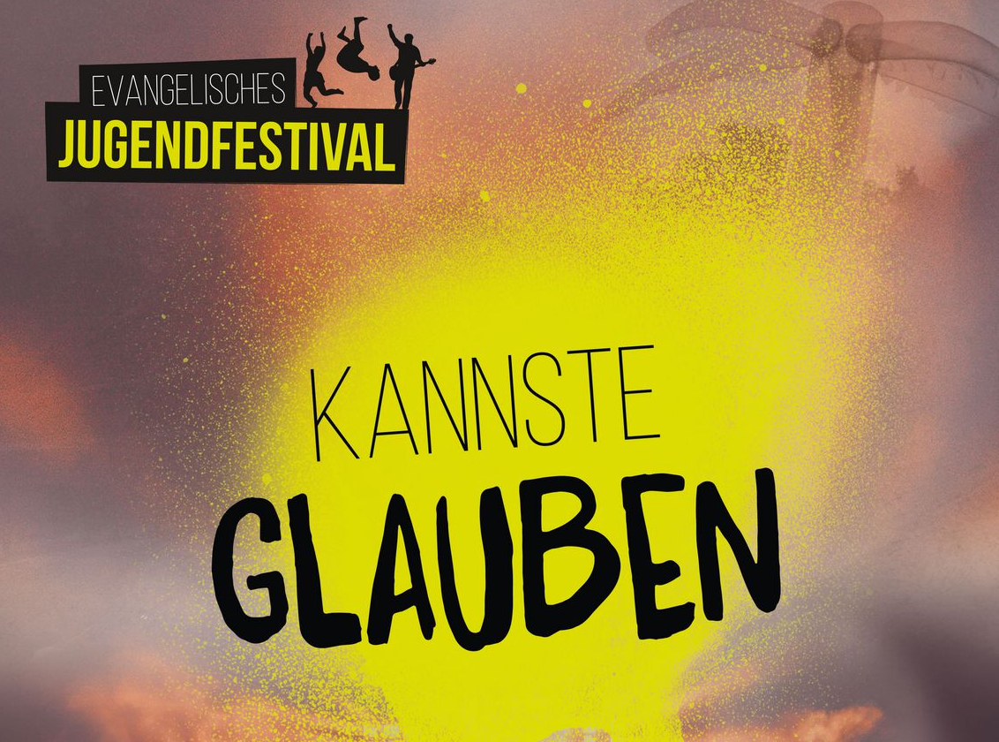
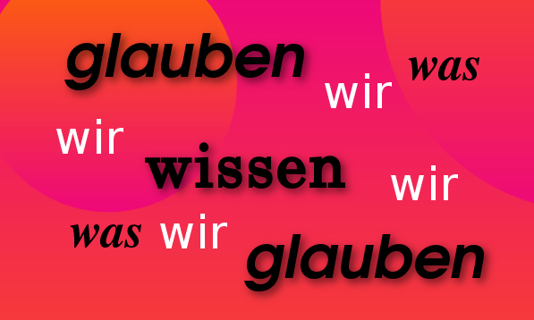
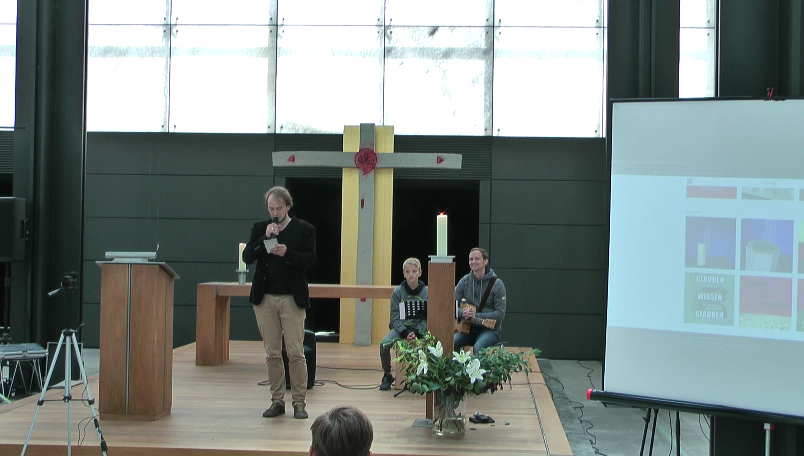
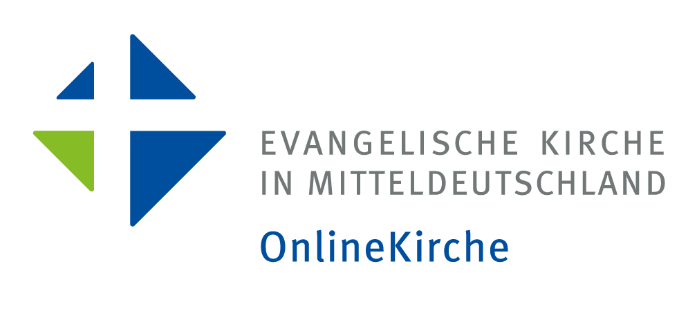

Die OnlineKirche ist mit einer Online-Andacht dabei!
Erzähl uns deine Geschichte!
Was willst du zum Thema "Glauben" wissen?
Via Instagram mit den Hashtags
#OKglauben und #KannsteGlauben
oder per Mail an onlinekirche@ekmd.de
Wie stehen die Chancen für das Team der deutschen Fußballnationalmannschaft? Da ist schnell vom Glauben die Rede. Hoffnung, statt Vernunft. Torjubel und tiefe Trauer, ja sogar Tränen. Fußball weckt Emotionen. Stadionpfarrer Eugen Eckert sagt: „Die Kirche muss sich unbedingt etwas von der Begeisterungsfähigkeit des Fußballs abgucken.“ Also, was hat Fußball, was der Glaube nicht hat? Oder lebst du Deinen Glauben vielleicht doch wie ein Fußballfan: Feuer und Flamme für Gott? Himmelhochjauchzend und zu Tode betrübt? You’ll never walk alone?
#KannsteGlauben
Sag uns, was du glaubst unter #OKglauben auf Instagram oder per Mail an onlinekirche@ekmd.de
Weltmeister ja, aber nicht bei dieser WM...
Aber vertrauen ist manchmal gar nicht so leicht. Blind zu vertrauen ist gefährlich. Nicht zu vertrauen ist unmöglich.
Dem Papst, der Kanzlerin oder dir selbst? Wer ist für dich vertrauenswürdig? Und woher weißt du, wem du vertrauen kannst?
Sag uns, wem Du vertraust unter #OKglauben auf Instagram oder per Mail an onlinekirche@ekmd.de
Dass #Glaube "an sich selbst" Grenzen hat, habe ich durch eine schwere Krankheit erfahren.
Und in solchen Momenten den Mut nicht zu verlieren, das ist die Kraftprobe, der man sich stellen muss.

Schließen sich Glaube und Wissen aus und:
Was kann ich als vernünftiger Mensch überhaupt noch glauben?
Frag uns, unter #OKglauben auf Instagram oder per Mail an onlinekirche@ekmd.de
Manchmal braucht Glaube bestimmte Orte.
Und was heißt das für dich? Was hast du für ein Bild für Gott?
Gott ist für mich wie ... #OKglauben auf Instagram oder per Mail an onlinekirche@ekmd.de
Am Samstag, dem 23. Juni 2018, gab es ab 13 Uhr eine Liveübetragung aus dem Christuspavillon des Klosters Volkenroda.

Den folgenden Text aus den Psalmen haben wir in der Andacht gelesen.
Der HERR ist mein Licht und mein Glück.
Vor wem sollte ich mich fürchten?
Der HERR ist der Schutz meines Lebens.
Vor wem sollte ich erschrecken?
Ich möchte im Haus des HERRN sein
Alle Tage meines Lebens.
Denn er bewahrt mich in seiner Hütte
Am Tag, an dem mir Unheil droht.
Er bietet mir Schutz unterm Dach seines Zeltes,
er hebt mich hoch auf einen sicheren Felsen.
Höre doch, HERR, mein lautes Rufen!
Hab Erbarmen mit mir und antworte mir!
Ich dachte nach über dein Wort:
„Ihr sollt mein Angesicht suchen!“
Ja, dein Angesicht, HERR, will ich suchen!
Du bist doch mein Beistand!
Gib meinen Fall nicht verloren
Und lass mich nicht im Stich!
Zeige mir, HERR, deinen Weg
Und führe mich geradlinig durchs Leben!
Was wäre mir geschehen,
wenn ich nicht fest darauf vertraut hätte:
Ich werde die Güte des HERRN erfahren,
solange ich im Land der Lebenden bin.
Darum hoffe auf den HERRN!
Sei stark und fasse neuen Mut!
Setze deine Hoffnungen auf den HERRN!
Im Kreuzgang des Pavillons sind Jugendliche auf Motivsuche gegangen.
Den "ewigen Brunnen" verbinden die Jugendlichen der Jungen Gemeinde Bad Sulza mit der Taufe.
Das Kreuz empfanden die Teilnehmer als das kräftigsten Zeichen des christlichen Glaubens.
Diesen Post versandten sie über das Handy vom Pfarrer der OnlineKirche Ramòn Seliger, weil es an WLan und mobilen Datenvolumens mangelte.
"OKglauben" ist ein Projekt und Experiment der OnlineKirche der Evangelischen Kirche Mitteldeutschlands
Wir danken den Mitarbeitern des Evangelischen Jugendfestivals, des Klosters Volkenroda, sowie den Musikern der Jungen Gemeinde Bad Sulza ganz herzlich für die Unterstützung!
